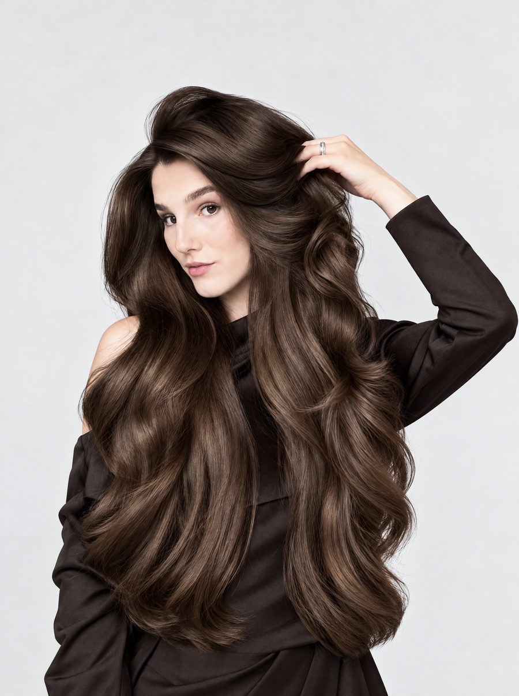
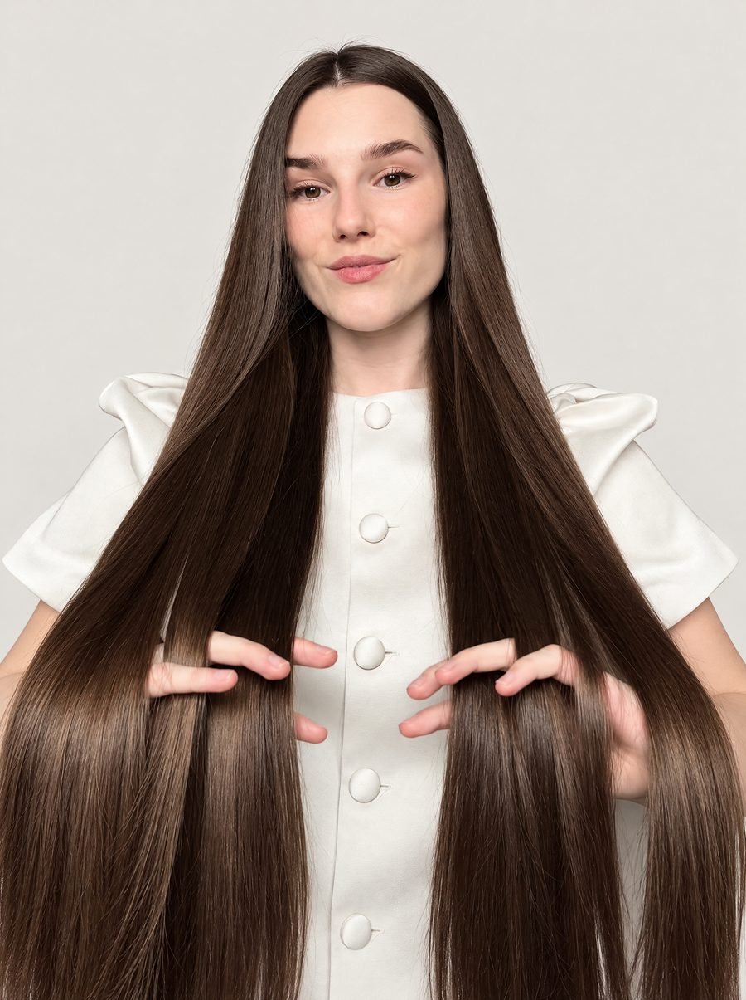

Deine Haarpflege-Bestie
@lauraspiessmacher
Hier anfangen
Drei kurze Checks. Jeder beantwortet eine Frage zu euren Haaren.
Kostenlos, ohne Anmeldung.
Meine Serie auf Instagram
Alle Folgen an einem Ort. Tippt auf eine Folge, um sie anzusehen.
Folgt mir
Bald online
Shop my Favorites
Healthy Hair Club
Produkteinschätzungen, Quizze und Wissen rund um eure Haare, alles an einem Ort.
BaldLaura Spiessmacher
c/o make it social.
Landshuter Allee 51
80637 München
Vertreten durch Stefanie Bartsch
E-Mail: management@lauraspiessmacher.com
Adresse für PR-Pakete auf Anfrage
Von kaputten zu gesunden Haaren.

Willkommen im Healthy Hair Club
Auf Instagram nehme ich meine Community mit und zeige ihr, wie sie das Beste aus ihren Haaren herausholt und wie der Weg von geschädigten Haaren zurück zu gesunden Haaren aussehen kann.
Mein Ziel bei allem: Haare so flexibel und geschmeidig wie möglich halten. Flexibles Haar bricht im Alltag nicht so schnell, sprödes schon.
Woran ich glaube
Der meiste Schaden entsteht mechanisch. Und zwar genau bei den Dingen, auf die im Alltag am wenigsten geachtet wird:
Je flexibler und geschmeidiger eure Haare sind, desto unempfindlicher sind sie im Alltag. Kommt dann eine Belastung dazu, sind sie darauf vorbereitet und brechen nicht so schnell.
Wer konsequent vorbeugt, hat weniger Schaden und muss am Ende auch weniger reparieren.
Eine Wäsche ohne Pflegeschritt hinterlässt raue Haare, und raue Haare reiben stärker. Deshalb gehört ans Ende jeder Wäsche eine Maske, ein Conditioner oder eine Leave-In-Pflege.
Meine Signature-Methode gegen Haarbruch und Spliss: die LL-Methode.
LL steht für Lauras Leave-in, und für zweimal Leave-in:
Ist eine Haarspitze einmal gespalten, wächst sie nicht wieder zusammen. Produkte können Spliss nur kaschieren. Entfernen kann ihn nur die Schere.
Darum lohnt sich Vorbeugen doppelt: Jeder Spliss, der gar nicht erst entsteht, muss später nicht abgeschnitten werden.
Von kaputten zu gesunden Haaren.